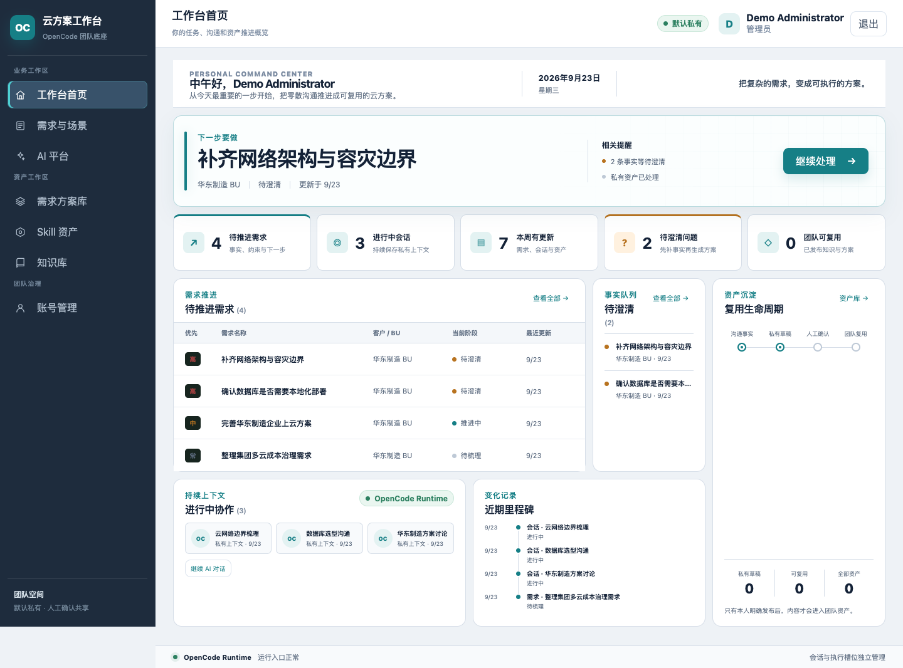
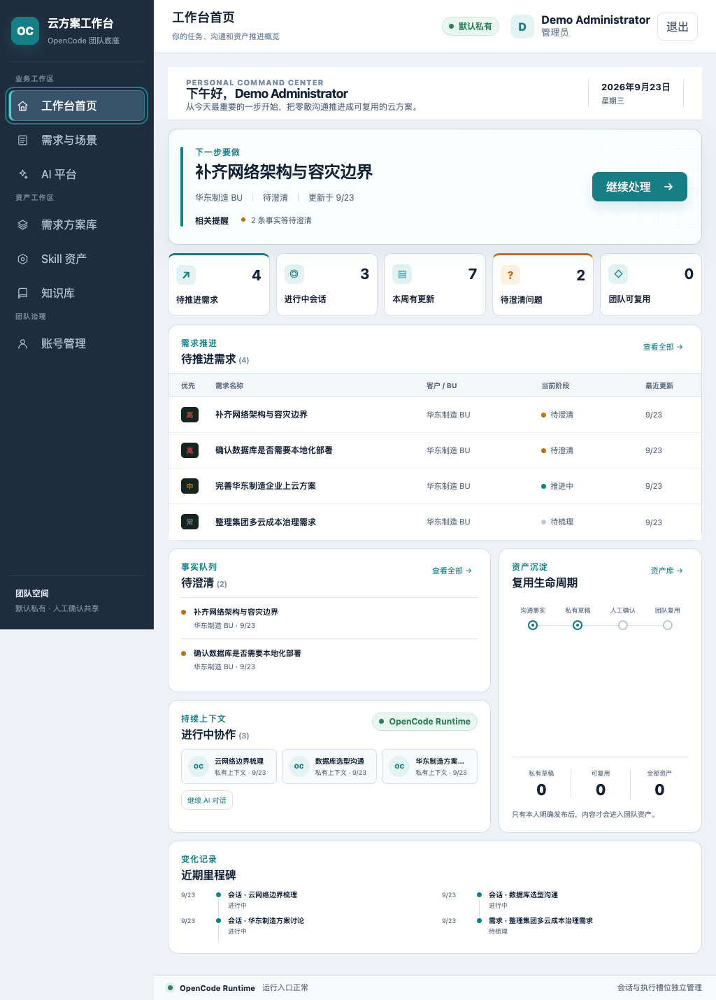

P2E · PERSONAL COMMAND CENTER
把卡片拼图改成真正可工作的个人作战台
首页现在围绕“下一步”组织真实的本人需求、澄清队列、持续会话、资产生命周期和里程碑。OpenCode Runtime 保持为底层状态，默认私有边界没有改变。
用户可见变化
- 问候、日期、业务标语与一个明确的下一步。
- 真实的本人需求表、澄清列表和私有会话，不再使用两行占位文案。
- 资产生命周期和近期里程碑让沉淀过程可见。
- 1440px 使用 12 栅格；1024px 使用明确的双列办公布局。
浏览器证据


验收
自动化与安全
- 416 项：392 pass、0 fail、24 个真实环境用例按预期 skip。
- 构建、语法检查、密钥扫描、diff 检查全部通过。
- SSR 合同证明本人标题可见，但需求正文、知识正文和方案正文不进入概览。
浏览器与可访问性
- 1440×1000 和 1024×900 的 body 宽度与 viewport 相同。
- 键盘首个 Tab 到达当前导航，并显示 2px 青绿色焦点环。
- 填充态含 4 条需求、2 条澄清、3 个会话；空状态保持同一布局骨架。
仍未完成的生产验收
- 公司 Linux、内部 Provider、云 MySQL、真实 20 活跃任务与灾备演练不在本次本地 UI 验收范围内。
- 完整 P2E 全站 1440/1024 浏览器矩阵仍需继续。